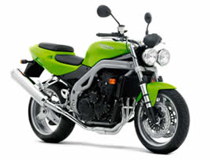
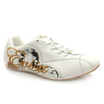

jQZoom_v2.2(updated)
jQZoom
allows you to realize a small magnifier window close to the image or images on your web page easily.
I decided to build this jQuery plugin to embed detailed big images in my B2B.So now in few steps you can have your jQZoom in your website,eCommerce or whatever you want.Author:Ing. Renzi Marco ,December 2007
Demo1(multiple images)

Demo2(single image)

INSTRUCTIONS1)Simply include the jqzoom.css in your page.
link href="your_path/jqzoom.css" rel="stylesheet" type="text/css" media="screen"
2)Include jQzoom and jQuery code
<script src="your_path/jquery.js" type="text/javascript"></script>
<script src="your_path/jquery.jqzoom.js" type="text/javascript"></script>
3)Now create a container(div is better!!) for the image or images you would like to zoom and assign to it the “jqzoom” class.Specify for each image,the jqimg attribute,to wich you are going to assign the big image path.
<p class="jqzoom"><img src="images/shoe4_small.jpg" alt="shoe" jqimg="images/shoe4_big.jpg" /></p>
4)Load the plugin at window load
$(document).ready(function(){
$(".jqzoom").jqueryzoom();
});
You can also specify some options:
$(document).ready(function(){
$(".jqzoom").jqueryzoom({
xzoom: 300, //zooming div default width(default width value is 200)
yzoom: 300, //zooming div default width(default height value is 200)
offset: 40, //zooming div default offset(default offset value is 10)
position: "right", //zooming div position(default position value is "right")
preload:1 // by default preload of big images is 1
lens:1 // by default the lens is 1
});
});
5)Sit and wait for people to tell you that what you have done is really cool!!!!:-)
Download
Se non capite bene l’inglese e vi servono spiegazioni chiedete pure.
Marco
Version tracker:
29-03-2008
jQZoom_v2.2 released:Fixed problems with RELATIVES positioned containers.
26-03-2008
jQZoom_v2.1 released:Improved performance and zoom
22-03-2008
jQZoom_v2.0 released:
Features:
1)Seo Improved
2)Zooming lens over the images
3)Preload of big Images
09-02-2008
jQZoom_v1.2 released:fixed IE peoblem with the ALT attribute,showing the image path.
17-12-2007
jQZoom_v1.1 released:fixed Opera Bug(it wasn’t sliding properly).
14-12-2007
jQZoom_v1.0 released


Too bad this those not work properly in Opera (9.24).
It zooms, but it will only zoom horizontally, not vertically.
Nice idea though.
17 Dec 2007 at 9:15 am
I’m going to check it immediatly and i’ll try to fix it!
Thanks a lot Edwin.
Ing. Marco Renzi
17 Dec 2007 at 9:29 am
This is an easy to use script and will come in handy for a gallery.
17 Dec 2007 at 10:43 am
Very handy script, especially as the trend of the increase of camera resolution, it is a waste for people to upload resized / cropped photos because of the browser screen size limitation.
17 Dec 2007 at 11:56 am
Thanks a lot,it’s a great surprise for me to see how many people like this,and i like this as well.:-)
If someone has an idea of the problem about Opera and how to fix it,they’re welcome.!!!
17 Dec 2007 at 1:34 pm
Hi all….i fixed the opera bug a few minutes ago!!!:-)
Now it should be ok.
Thanks a lot to all.
Ing. Marco Renzi
17 Dec 2007 at 2:35 pm
Superb! The only thing that’s annoying is the bar which always appears when you hover over an image. Here it shows the thing you entered in the alt section. Is there a way to fix this?
17 Dec 2007 at 4:31 pm
Are you using IE?
I think so…i’ll try to fix this as well..i have no time today.I’ll try to check it for sure tomorrow.
Thanks.
17 Dec 2007 at 4:37 pm
It’s not a bug,it will display the image title only if you’re waiting over the image(and not moving) as it should do….
but i’ve a sort of idea to make it right.
Ing.Marco Renzi
17 Dec 2007 at 4:41 pm
Yep, works perfect. Cheers for fixing.
19 Dec 2007 at 11:21 am
Thanks to you.I want you to stay tuned,and if you need something you sould only ask.I’m actually searching for some good contacts in the world,and a good and nice job!.I relly like to make new experimental stuff or projects.
So if you have something good to me just tell!.
Thanks.
19 Dec 2007 at 11:55 am
Hi, Renzi…
Looks like you got a really nice plug-in that I’ve been waiting for for e-commerce use.
Problem is… I can’t figure out where to download it! The download section on this page has no links (IE7) and neither does the repository on jQuery.com.
How do I download all necessary files, which I believe is just jqzoom’s js file and its css file, as well.
Thanks!
Rick
19 Dec 2007 at 1:49 pm
Hi, Renzi,
Looks like you’ve created the plug-in I’ve been waiting for for e-commerce sites!
Problem is… I can’t figure out where to download it! The download section on this page doesn’t have any active links (IE7), I can’t find it anywhere else on the site, and jQuery.com doesn’t have any links, either.
(I’m sure I’m missing something obvious)
Anyway… where can I download all necessary files, which I assume as just the js and css files for jZoom.
Thanks,
Rick
19 Dec 2007 at 1:52 pm
Hi, Renzi…
Nevermind, I found it.
I didn’t think to mouseover “download”.. duh.
I was mousing over the various versions, thinking the links would be there.
Sorry!
Rick
19 Dec 2007 at 2:03 pm
You should click on download..:-)
Anyway this is the link:
http://www.mind-projects.it/blog/wp-content/jqzoom_v1.1.rar
Ing Marco Renzi
20 Dec 2007 at 9:30 am
[…] jQZoom- allows you to realize a small magnifier window close to the image or images on your web page […]
20 Dec 2007 at 2:55 pm
Hi Renzi, im from Argentina, i hace to say, GOOD JOB… incredible men, this is very utilizable for catalogs online…
Congrats and keep in the good way men!
Blessings!
Franco
21 Dec 2007 at 1:44 am
Hello,
Terrific idea and great execution. I noticed, though, that it’s buggy in Safari 3 (I’m using 3.0.4 on Leopard). The zoom window is offset about 200 px to the right…
21 Dec 2007 at 4:14 am
[…] jqzoom | (tags: jquery) […]
21 Dec 2007 at 7:17 am
Nathan,i’m looking this plugin in safari 3.0.3 for windows and it looks nice,no bugs at all.
Tell me more about your problem.
Thanks.
Ing. Renzi Marco
21 Dec 2007 at 9:05 am
I discovered that lightbox was playing strange tricks to me….
Thanks
20 Jan 2008 at 2:11 am
Hi Marco,
Cool module, but I have a problem. It is probably me and my css, but maybe you would be so kind to have a look.
Not working, and going through Smarty….
http://nethome.be/ss/v2/?mc=error&pg=demo.161801-080124b
Working, and standalone…
http://nethome.be/ss/v2/templates/mc_demo.161801-080124b-standalone_nl.htm
Different browsers give different results, but none are working as it should.
Let me know by mail if there is any extra information you would like.
Best regards,
Ken
24 Jan 2008 at 9:07 pm
I discovered and fixed your problem.
You are using an extra comma.Remember,the last option has no ending comma,and you commented the last one.
xxx.jqueryzoom({
xzoom: 200,
yzoom: 200,
offset: 10 //no comma //offset(default offset value is 10) //
//position: “right” //zooming div position(default position value is “right”)
});
Cheers
Marco
25 Jan 2008 at 12:10 am
This is exactly what I was looking for for my project.
I first saw this type of feature of a local realtor website
where you could mouse over an image and a small rectangular box would appear with a magnified part of the image that you mouse over.
So I started googling for ‘magnify script’ and found this.
Is is possible to make the magnified area appear over the original image approximately at the same spot where you placed the mouse?
I mean you can look at some real estate listings on this site
http://www.saracramer.com/
click on ‘Sara cramer’s listings’ on the left, then on any listed home and then on ‘more photos’ and mose over a photo.
the magnified box appears right on the photo and you can move it around the actual picture to view details for any part of the photo
27 Jan 2008 at 8:47 pm
Hello from France
Great! thanks for sharing this.
However I found that using the jquery dimensions plugins solves some issues for complex layout (zoom over a lightbox, facebox or thickbox)
05 Feb 2008 at 9:10 pm
Hi,
Can I use another tag instead of “alt” for the big picture?
beacause when the user moves the mouse over the picture the alt ugly popup apears with my number-and-numbers jpg pictures.
Can you please tell me if I can use other tag like big=”…” and then change the js somewhere.
Thank You and congrats for this fantastic script
05 Feb 2008 at 11:38 pm
[…] jQZoom- allows you to realize a small magnifier window close to the image or images on your web page […]
07 Feb 2008 at 1:06 pm
Today i’ve released the 1.2 version where i’ve fixed the ALT problems with IE,showing the image path.
Ing. Marco Renzi
09 Feb 2008 at 3:03 pm
how use jqzoom with jquery 1.2.x only ?
with jquery version below 1.2 it’s ok, with jquery version higher 1.2 : isn’t ok
I am compelled to load 2 versions of jquery.
I use the function
$(”a.cartes1″).click(function() {
$(”div.carte1″).show();
$(”div.carte2″).hide();
$(”div.carte3″).hide();
});
I want to win 20 ko on download
Thank You
14 Feb 2008 at 5:35 pm
[…] instructions at Mind-Projects jQZoom project page Did you like this post? Subscribe to our RSS for more! […]
14 Feb 2008 at 10:20 pm
tested and fully working with jquery 1.2.3
Try to read the instructions carefully.
Ing Renzi Marco
16 Feb 2008 at 2:42 am
Is there a way to make the enlarged image work outside a table cell? I am working with columnar data that really can’t be done with CSS (that I can figure out anyway). The first cell is a thumbnail of a product. When I use this script and over the image. It loads inside the cell, thereby enlarging the cell accordingly and destroying the page.
17 Feb 2008 at 3:50 am
Never mind previous post. It works much better when you remember to copy the .css file into the right folder! Great script. Keep up the great work!
17 Feb 2008 at 4:04 am
Outstanding work! Gets my vote for the best image magnifier.
19 Feb 2008 at 11:24 pm
[…] jQZoom- allows you to realize a small magnifier window close to the image or images on your web page […]
27 Feb 2008 at 12:38 pm
Very useful plugin, i really liked the solution!
one thing that is still bothering me is the use of the alt attribute for the big image. it would be better to leave the alt for the picture description for SEO important reasons…
02 Mar 2008 at 1:07 am
[…] jqzoom | […]
04 Mar 2008 at 8:34 pm
What a great and clever script, though I haven’t tried it but I will definitely use it on my t-shirts site. I don’t know if I’m asking too much but it worth mentioning, can you bring it to a level of this site I just worked? visit http://www.usc.co.uk/Nike+Capri+Mono/00073049400010,default,pd.html?cgid=1100
this is using scene7 javascript/server script api.
Peace!
05 Mar 2008 at 1:16 am
I have used it and I agree with you about the alt attribute, I inserted a new attribute called “lrg” so that I won’t have to use the alt or title. I get away with the new attribute since the xhtml is xml family and that encourage a new tag or attribute.
07 Mar 2008 at 1:50 am
Well I thought the jQzoom wasn’t working properly. It would only scroll vertically, not horizonatlly. ThenI found the error.
I had all my page’s content with in a body_container DIV, and that DIV had a property of position: relative. I forget why I put that there, but I didn’t need it, took that out, and now the jQzoom works perfectly. Yay.
09 Mar 2008 at 6:57 am
I should have also said that my image I’m attempting to use this on is nested amongst a handful of div’s of which some are set to a relative position and so on. Is there a list of rules that can cause troubles for this script?
11 Mar 2008 at 5:42 pm
I’m going to fill this page up, sorry for that. So I’ve determined that this app really does not like relative positioning on possible container elements. Is there any easy way to fix this or just get things out of relative positioning?
11 Mar 2008 at 6:15 pm
I’ve just been playing around with this and its an absolutely great script. just the one thing that bothering me is i can’t figure out how to position the zoom div exactly where i want it on the page?
17 Mar 2008 at 11:40 am
Excellent work on this, thank you for sharing.
I am trying to get the zoomdiv to follow the mouse, but so far my results are less than desirable.
Any recommendations?
18 Mar 2008 at 5:14 pm
Outstanding..Bravo.
Clean Fast And Easy 2 Use.
Keep On.
19 Mar 2008 at 2:09 am
[…] et qui méritent que l’on s’y attarde un peu! J’aime notamment l’effet de zoom sur une image qui permet de montrer des détails non visible sur l’image d’origine […]
19 Mar 2008 at 11:11 am
Oh yes,
your bit of code showing the examples has a typo:
You say:
$(document).ready(function(){
$(”.jqzoom”).jqueryzoom({
xzoom: 300, //zooming div default width(default width value is 200)
yzoom: 300, //zooming div default width(default height value is 200)
offset: 40, //zooming div default offset(default offset value is 10)
position: “right”, //zooming div position(default position value is “right”)
preload:1 // by default preload of big images is 1
lens:1 // by default the lens is 1
});
});
you’re missing a comma after the final preload option it should say
…
preload:1, // by default preload of big images is 1
lens:1 // by default the lens is 1
});
});
No need to post this comment, just amend the example above.
thanks
Joel
30 Mar 2008 at 9:13 am
I’d like to use this plugin for a customer’s website and gladly spend some money if it works out. But for some reason we can only use jQuery 1.1.2 and this plugin just won’t work with it.
Firebug says:
$(this).offset is not a function (jquery.jqzoom.js line 34)
Any suggestion?
03 Apr 2008 at 4:52 pm
Molto bello, complimenti!
03 Apr 2008 at 10:26 pm
Hi from Colombia
Renci, this script rocks!!
I’m need to know how to change dynamically the big image.
I have a micro thumbnails column, the “normal” image and a big image. The jqZoom works with ht enormal and big image.
Dynamically I change the normal imagen when users clicks on microthumbs with document.getElementById(’normal’).src, but I don’t know how to set the big one.
respect
04 Apr 2008 at 10:09 pm
[…] Image Zoom […]
05 Apr 2008 at 8:32 pm
[…] jQZoom - позволяет показывать увеличенные фрагменты […]
15 Apr 2008 at 8:39 pm
Another hello from France.
Your plugin is really cool !
Just, in your jqzoom.css file, I think you might delete the border property of your “jqzoom” class ’cause it make a strange dot (pixel) on your “span” which has the “jqzoom” class and this border is not really necessary on your images put in other “span” elements with this same class.

Arrivederci
22 Apr 2008 at 2:01 pm
[…] thinking about the name; fr = free, 3 = three systems already available (fatfreecart; js-kit; jqzoom.[other systems you may know of please let me know]), ecommerce = obvious. I am looking for php […]
28 Apr 2008 at 12:06 pm
Many Thanks for Sharing, such a valuable information.
Best Regards
Team
Web Hosting Sri Lanka
05 May 2008 at 6:44 am
nice work, would be good to see a port to prototype though as I only use jquery for adobe air but prototype for all my web work.
12 May 2008 at 12:00 pm
[…] 作者网页：http://www.mind-projects.it/blog/jqzoom_v10 […]
12 May 2008 at 12:38 pm
It’s really good tool!
But i thing it will be great if there was a vertical offset parameter, because the current works only horizontally.
Dimitar
12 May 2008 at 4:45 pm
Hi
This is just what I’ve been looking for, but the movement of the large image is a bit jerky, compared to the ones on www.endless.com and www.gap.com. Can the script be tweaked to make it smoother?
Olly
16 May 2008 at 2:48 pm
[…] Jquery potrete realizzare un bellissimo script per zoommare sulle vostre immagini. Qui trovate come installarlo. Qui invece per […]
24 May 2008 at 10:08 am
[…] Jquery potrete realizzare un bellissimo script per zoommare sulle vostre immagini. Qui trovate come installarlo. Qui invece per […]
24 May 2008 at 10:08 am
[…] ดาวน์โหลดที่นี่ครับ […]
26 May 2008 at 3:06 am
It’s so cool Effect!
Thanks for your work,I love it.
28 May 2008 at 2:40 pm
First and most importantly: this is a really cool plugin, so thanks for all your hard work!
I am interested in a way to disable the plugin…is there a way to do that currently? I have a “gallery” page I am working on where I want the user to be able to “activate” the jqzoom plugin, and then be able to click another button to “deactivate” the plugin (eliminate the hover/mouseover and zooming). Would this require a modification of the original plugin?
Thanks in advance!
-a
03 Jun 2008 at 10:49 pm
[…] SlideShows － 幻灯片 10) jQZoom-让你在你的网页上很简单的实现图片的缩放功能。 […]
06 Jun 2008 at 9:52 am
This is an amazing script! I do love the JQuery model and am trying to adopt it from now on.
I’m doing a commercial site and would like to test it and will donate to you if I use it. My problem is that I’m a Mac developer and the os doesn’t seem to recognize the .rar extension. Is there a .zip or .bin compressed file available?
Great work!
06 Jun 2008 at 7:27 pm
[…] verrez il y a des effets qui sympathiques et qui méritent que le coup d’oeil, notamment l’effet de zoom sur une image qui permet de montrer des détails non visible sur l’image […]
09 Jun 2008 at 11:51 am
excellent article, thanks for the contribution.
another link of zoom http://fancy.klade.lv/
13 Jun 2008 at 7:09 am
Very good plugin,
It would be useful setting a fixed position option for all zoomdivs in a page. I’ve got this way:
Change line 22:
preload: 1
to:
preload: 1,
ypos: false
And line 78:
$(”div.zoomdiv”).css({ top: imageTop,left: leftpos });
to:
if(settings.ypos != false){
$(”div.zoomdiv”).css({ top: settings.ypos,left: leftpos });
}else{
$(”div.zoomdiv”).css({ top: imageTop,left: leftpos });
}
Now you can set the absolute ypos option at plugin calling:
$(document).ready(function(){ $(”.jqzoom”).jqueryzoom({
ypos:300
}); });
………………………………….
Thank you for your great work,
Pablo
16 Jun 2008 at 3:36 pm
[…] instructions and update at jQZoom v2.2 project […]
23 Jun 2008 at 12:45 pm
Hi, Renzi,i test your module with module pages,it’s ok.but i try to copy and then plaste the code in my online store by zen cart code , it does not work well..
29 Jun 2008 at 3:38 pm
hi, it’s very cools plug in top very top!!!
thanks this devellopement very wonderfull…
it is possible to include this script in product scoller of virtuemart 1.1 in joomla 1.0.15 ?
because i very need this in scroller product
how to do this ?
thanks you help
from paris
I speack very no good english but i ander standing ..lol
30 Jun 2008 at 11:08 pm
Why did you remove my comment about absolute y positioning modification?
I though it could be useful for your great plugin. Don’t you?
01 Jul 2008 at 8:42 pm
Veramente molto bello.
Penso che l’utilizzerò in molti siti di eCommerce
Ciao e grazie!
10 Jul 2008 at 5:03 pm
[…] JQZoom est un plugin pour JQuery permettant d’ajouter une loupe sur vos images. […]
12 Jul 2008 at 10:37 am
[…] 12th, 2008 at 07:04pm 雪山飞猪 浏览: 6 jQZoom 是一个 jQuery […]
12 Jul 2008 at 12:04 pm
[…] yakınlaştırabileceksiniz.jQuery zoom plugin sayesinde olacak bunlar tabiiki. Demo sayfasına şuradan ulaşabilir, şuradan bilgisayarınıza […]
12 Jul 2008 at 12:41 pm
[…] http://www.mind-projects.it/blog/jqzoom_v10 […]
12 Jul 2008 at 1:06 pm
[…] darle un excelente efecto Zoom a tus imágenes. En el blog del autor te enseñan como usarlo. jQZoom V2 0 […]
12 Jul 2008 at 8:26 pm
…
Leyendo diarioTHC descubro JQZoom. Cómo su mismo nombre deja adivinar JQZoom es un plugin para JQuery que te permite ampliar la región de una imagen sobre la que tengas posicionado el puntero. Puedes ver ejemplos y un tutorial de su instalación en s…
13 Jul 2008 at 7:53 pm
[…] http://www.mind-projects.it/blog/jqzoom_v10 […]
14 Jul 2008 at 3:26 am
[…] : www.mind-projects.it/blog/jqzoom_v10 , via […]
14 Jul 2008 at 9:03 am
[…] usuario quiere tener todos los detalles posibles del producto que adquirirá. Esto nos permite hacer jQZomm, un plugin de jQuery con el cual podremos cargar dos imágenes, una miniatura y otra más grande […]
14 Jul 2008 at 9:37 am
[…] usuario quiere tener todos los detalles posibles del producto que adquirirá. Esto nos permite hacer jQZomm, un plugin de jQuery con el cual podremos cargar dos imágenes, una miniatura y otra más grande […]
14 Jul 2008 at 8:33 pm
I don’t see a license associated with the script. Any chance you could license it under a dual MIT/GPL license like jQuery?
Also, rather than creating a separate “jqzoom” div and assigning a jqimg class, why not do something like the jQuery ThickBox plugin does, where the small image is wrapped inside a link to the larger image? That way if a user does not have javascript enabled, it will degrade gracefully, allowing the user to click on the thumbnail to view the larger image.
I was thinking of developing a Drupal module around the script, but resolving the two issues above would make it significantly easier.
In any case, thanks for the script!
15 Jul 2008 at 12:02 am
[…] Website : http://www.mind-projects.it/blog/jqzoom_v10 […]
15 Jul 2008 at 8:48 am
[…] jqZoom (tags: jquery jquery-gallery-zoom) […]
15 Jul 2008 at 11:44 am
Thanks , I like it, and it is very usefull, but I think ,can it put under the small pic? I want it.
16 Jul 2008 at 2:01 am
Hi Marco,
nice work, but there are any problems with transparency PNGs in the IE < vs.7, because the AlphaImageLoader-filter deletes the img-Tag and therefore the jqimg-attribute doesn’t exists no longer. In this case I must use a hidden layer, which consists the path-value for the big image.
Also the use of an specific container as goal (I must optimized your code for this functionality ;-)) produce an error with the scrollLeft-behavior. I don’t know why, so I use css(marginLeft:something) and it works fine.
Nevertheless thanks for your great work. It saves me a little time.
Best regards from munich
Ralf
16 Jul 2008 at 10:04 am
[…] Zooming With jQuery July 16th, 2008 Posted in Effect, Extras jqZoom is a jQuery plugin which enables images to be […]
16 Jul 2008 at 11:48 am
[…] El plugin se llama jQzoom y tanto la descarga como los ejemplos los podéis conseguir en Mind Projects. […]
18 Jul 2008 at 8:01 am
Zoom con Ajax (eng)…
Hasta hace poco era impensable hacer ciertas cosas con tecnologías que no fueran Flash o equivalentes y poderlas hacer en cambio con AJAX. Este es un ejemplo más de la potencia que tienen las tecnologías y frameworks libres que por fortuna están qu…
18 Jul 2008 at 9:38 am
Super…Thanks…
19 Jul 2008 at 4:37 am
realy a nice plugin, but wouldn’t it be better instead of using an invalid attribute like “jqimg” (which does not validate in any html validator) to use the title attribute of the image to store the url of the full size image in? another way would be to simply require the user to upload the two images following a simple name convention like: _thumbnail.jpg and _zoomed
Keep up the good work!
19 Jul 2008 at 7:24 pm
[…] サムネイル画像 ズーム時用画像 jquery.js(最新版ではなく、Mind Projectで使用しているバージョン) jqzoom.js(配布先:Mind Projects) […]
20 Jul 2008 at 4:43 am
[…] 13. jQZoom […]
21 Jul 2008 at 10:14 am
[…] jqZoom JavaScript Image Zoom […]
21 Jul 2008 at 11:33 am
[…] jqzoom | […]
22 Jul 2008 at 7:06 am
Hello,
I’d like to use your script in my commercial component. Under what license is your code released? May I use it?
Thanks!
22 Jul 2008 at 5:40 pm
[…] allows you to realize a small magnifier window close to the image or images on your web page easily. (full story) […]
26 Jul 2008 at 9:07 am
[…] as, http://www.mind-projects.it/blog/jqzoom_v10 Posted in […]
29 Jul 2008 at 8:38 am
This script is great!
How can I setup the zoom div to always show up in t same spot on the page?
07 Aug 2008 at 1:07 am
thanks, i like it so much
07 Aug 2008 at 5:21 am
[…] http://www.mind-projects.it/Format: jQuery JavascroptDownload Diese Icons verzweigen auf soziale Netzwerke bei denen Nutzer […]
13 Aug 2008 at 10:34 am
great script:
works perfect on FF .
In IE6 on XP, I get the bar (and am using script latest version!) for the alt (?) of my non-zoomed image (the one on the left), when I hover mouse.
I also had an issue with the ZoomDiv being too low down, so I used margin-top:-20px (or whatever) in the CSS.
In IE 6 I also have content beneath the zoomDiv — this includes a form SELECT which still shows! Argh! Can anyone suggest a fix for this (it is more to do with the z-index I suppose?) Maybe I can set a z-index:1 on the normal content and help IE understand
thanks / mille grazie per il Scritto! Ti voglio moci bene
13 Aug 2008 at 3:43 pm
hey coolness! After an hour of looking at over-complicated Ie6 fixes…I google-fu’d a JQuery plugin that does what we need to fix in ie6 with selects! w00t!!
13 Aug 2008 at 4:36 pm
Hi Marco, first my compliments for this script.
I made a slightly mod to accomplish my needs: I’m using your script in a site (e-commerce demo) where I have, in the product details page, one main image and x (ranging fro 0 to unlimited) additional images (the main is medium sized and the others are small-sized).
I needed to have the divzoom always in the same place, so I re-arranged your code to achieve this.
Here is what I did:
gave an ID to the div surrounding the main image: id=”main_image”
then in the jquery.jqzoom.js file, around line 40 I added these three rows:
// Just for the position of the zoomdiv
var imageLeftzd = $(”#main_image”).offset().left;
var imageTopzd = $(”#main_image”).offset().top;
var mainimageWidthzd = $(”#main_image”).get(0).offsetWidth;
then I modified the following part of code (after some rows) that takes care of position of zoomdiv, in this way:
if(settings.position == “right”){
if(imageLeftzd + mainimageWidthzd + settings.offset + settings.xzoom > screen.width){
leftpos = imageLeftzd - settings.offset - settings.xzoom;
}else{
leftpos = imageLeftzd + mainimageWidthzd + settings.offset;
}
}else{
leftpos = imageLeftzd - settings.xzoom - settings.offset;
if(leftpos < 0){
leftpos = imageLeftzd + mainimageWidthzd + settings.offset;
}
}
$(”div.zoomdiv”).css({ top: imageTopzd,left: leftpos });
It works like a charm, thank you again
Now a question (since it passed a lot of time since I worked hardly with jquery and I’m not very practiced at the moment):
Is it possible/easy not to preload the big image, but just to retrieve it via ajax request?
15 Aug 2008 at 9:49 pm
[…] jQZoomZoom in the images without losing sight of the rest and without opening a new page. […]
19 Aug 2008 at 3:45 am
[…] jQZoom Das JQuery Plugin zoomt Bilder […]
21 Aug 2008 at 1:29 pm
[…] jqzoom | […]
22 Aug 2008 at 8:33 pm
Script utilissimo…e la demo2 mi fa morire dal ridere!!!
30 Aug 2008 at 12:04 pm
[…] jQZoom- allows you to realize a small magnifier window close to the image or images on your web page […]
01 Sep 2008 at 7:19 pm
I love this script, I am working on a project and the script works in my slideshow, the result on firefox are great, but on IE I get my big image imbedded within my slideshow thus cutting of the big image and my lightbox has my next image from the slide show as I am hovering the existing image.
I will contribute to your efforts, but I would like to know if I able to use this for my project. This is the page I am working on: http://www.crowellandco.com/project.php the function you want to look at in the page is: fadeshow.prototype.populateslide
Thank you for your help.
Yaz
11 Sep 2008 at 1:46 am
[…] jQZoom […]
11 Sep 2008 at 8:22 am
[…] jQZoom […]
11 Sep 2008 at 2:53 pm
[…] http://www.mind-projects.it/blog/jqzoom_v10 […]
12 Sep 2008 at 7:22 am
[…] jQZoom […]
12 Sep 2008 at 9:58 am
[…] jQZoom […]
12 Sep 2008 at 10:35 am
[…] ako lightbox, greybox, vhodný pre eshopy Posted By: admin Published in Webdesign 14Sep Javascript, pomocou ktorého umožníte Vašim návštevníkom eshopu, pozrieť detailne určitý produkt. Je […]
14 Sep 2008 at 12:33 pm
I like jqzoom a lot. I added some effects like
fadeIn(), fadeOut() and dropShadow() for the large picture and looks simply coool.
17 Sep 2008 at 7:17 am
Hi, I’m trying to make my site w3c comlpliant however when I use the w3c validator it doesnt accept the jqimg attribute. It says something like
Line 35, Column 120: there is no attribute “JQIMG”.
How can I use jqzoom with html strict doctype? I tried switching to transitional and I still get the same error. Can I set jqimg in CSS? If that is possible will the CSS also validate?
17 Sep 2008 at 1:21 pm
It’s really good tool!
19 Sep 2008 at 8:17 am
this is supper..!!!!!!!!! thnks admin =)
28 Sep 2008 at 1:51 pm
[…] jQZoom […]
28 Sep 2008 at 9:08 pm
Hello,
We would like to use this zoom application, however, we are wondering about the affect of download speeds if we upload all high resolution images to our 450+ products.
Can you advise on what the best resolution is and how this will affect the download speed of the website?
Many thanks
Colleen
www.miodestino.co.uk
01 Oct 2008 at 3:20 pm
[…] jQZoom […]
03 Oct 2008 at 10:40 am
Awesome and handy script.. cool
04 Oct 2008 at 7:04 am
[…] jQZoom […]
13 Oct 2008 at 4:39 pm
[…] JQ ZOOM […]
15 Oct 2008 at 1:47 pm
[…] Uses JQZoom JQuery Plugin by Mind Projects: http://www.mind-projects.it/blog/jqzoom_v10 […]
20 Oct 2008 at 10:49 pm